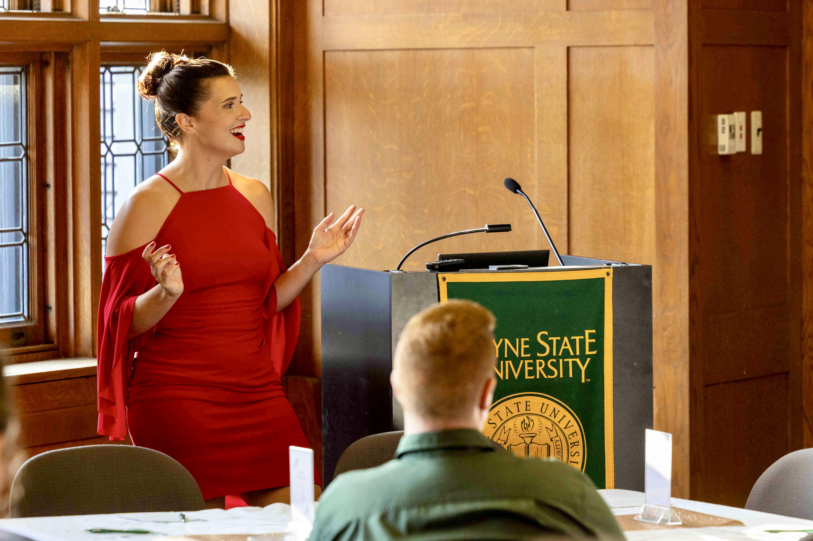
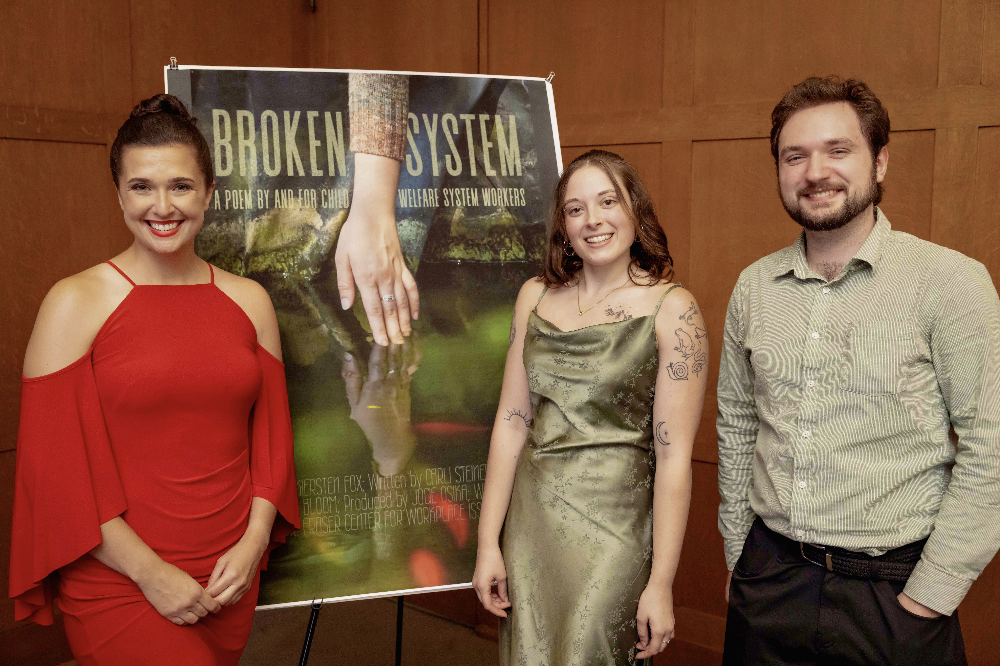
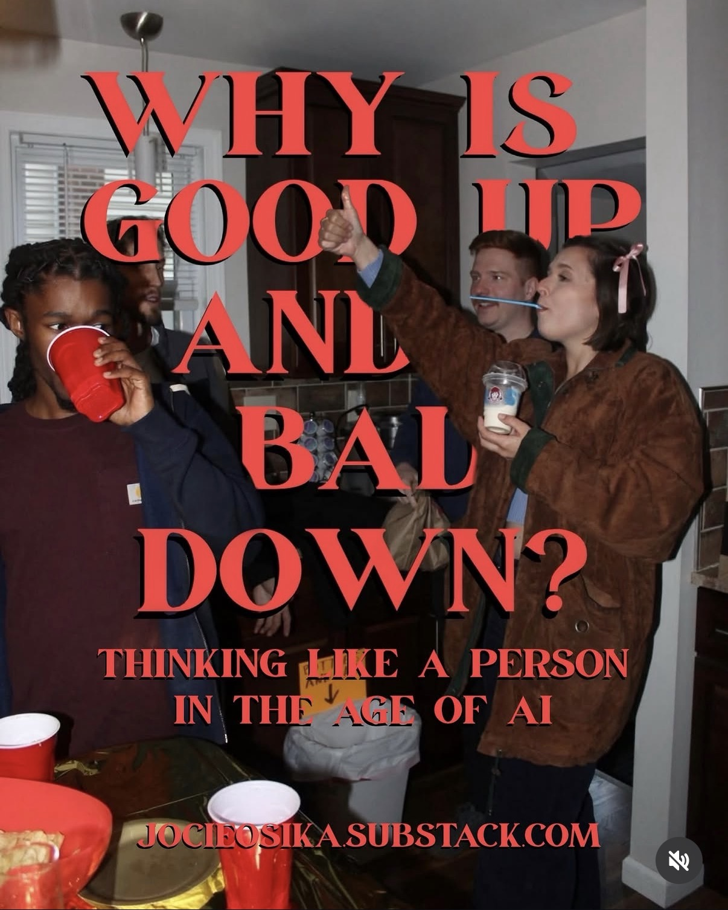
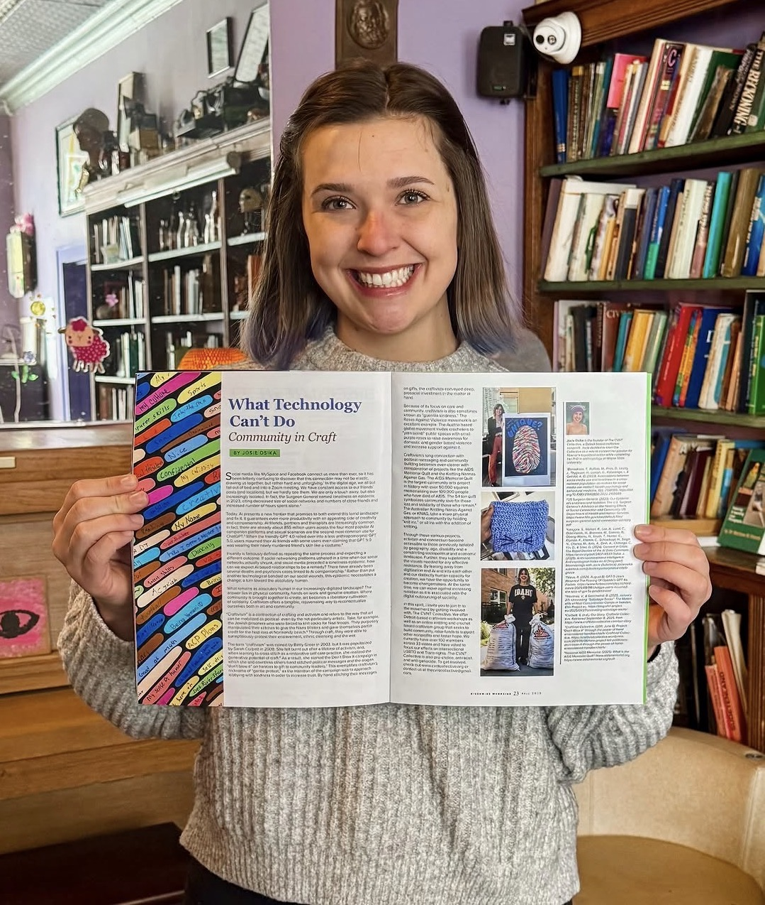
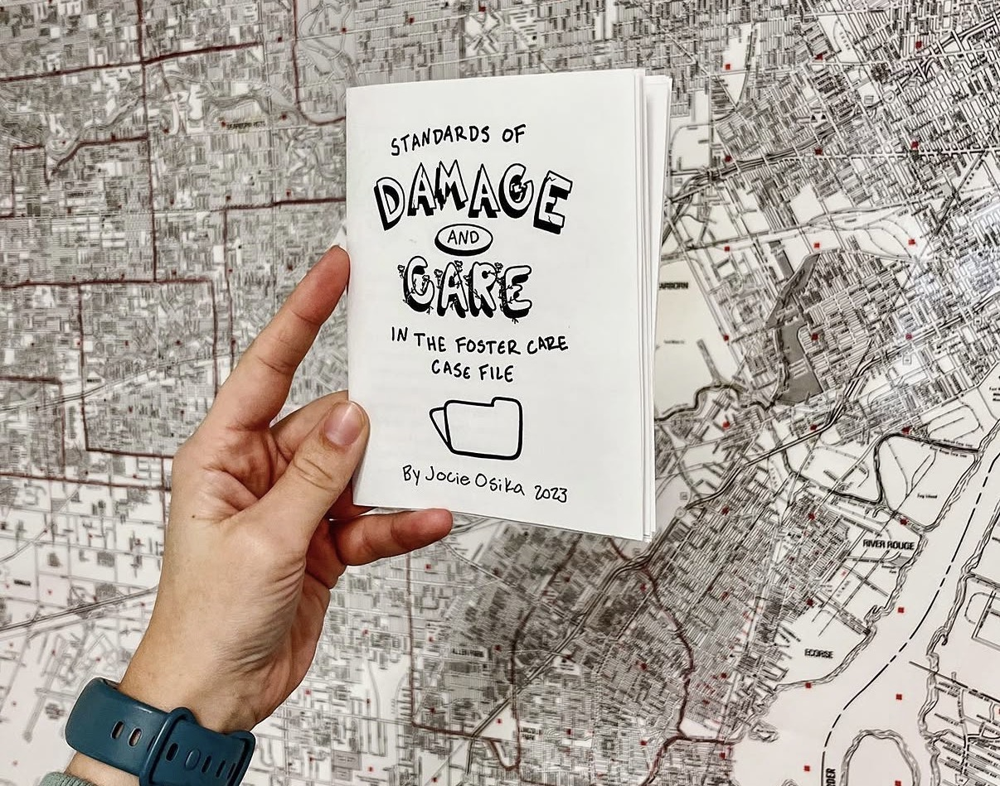
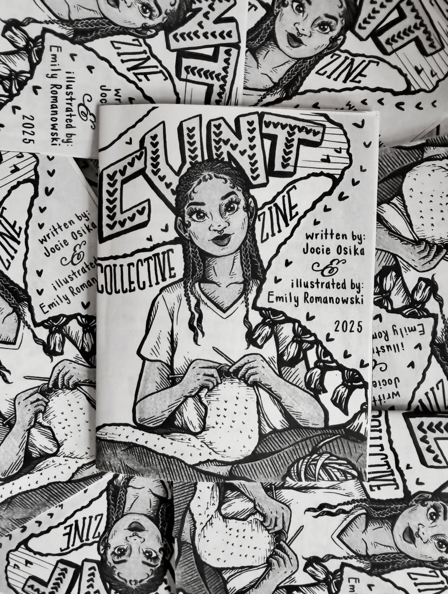

Ph.D. Candidate, Anthropology
ABD and available for hire
jocieosika@wayne.edu

Community engagement, public scholarship, and science communication are core to my approach to knowledge building. I enjoy brewing up and executing plans to give my findings back to my interlocutors in accessible ways, which I find helps to facilitate the coproduction of knowledge.
In the summer of 2026, I was awarded a Fraser Fellowship research grant that allowed me to create a public-facing fraternal twin to my paper, "Care Infrastructure Breakdown and Repair through Child Welfare Workers' Heterotopic Thinking." Through preliminary fieldwork working in the child welfare system and fieldwork conversations with child welfare workers, I was sensitized to the stressful and thankless nature of work in child welfare. As such, I decided that a fancy feeling, celebratory event would be the best setting in which to communicate a portion of my findings to child welfare workers. After securing some additional support, I was able to craft a regal, fun, educational night featuring a build-a-bouquet bar, a presentation of my findings, the screening of Broken System (see below), dinner, dessert, and plenty of pictures!

Broken System is a poem arranged from interview quotes. After analyzing my interviews with child welfare workers (broadly defined), songwriter Carli Steiner arranged the quotes into a poem reflective of my finding that child welfare workers simultaneously hate the system and love their jobs. Once the poem was done, Jacob Bloom directed and shot the video component. In the video, Kiersten Fox, a real child welfare worker, recites the poem alongside powerful visuals curated by Bloom. The Broken System poem video was well received at its premier at my Child Welfare Soiree, and it is available for public viewing on Youtube!
Scroll down to the multimedia section to see the Broken System short film!
As promised above!

Meanderings With Jocie is a mailing list where I can get out thoughts relatively quickly to my audience of 75 subscribers and followers, along with anyone else who comes across my posts. Usually, my posts intertwine anthropology with topics I have been considering a lot lately.
Selected Entries

What Technology Can't Do: Community in Craft is an educational article I wrote about craftivism (crafting + activism) for an issue of Riverwise focused on technology and community during the developing age of AI. It also features a picture of a craftivism project I hosted at the 42nd annual Giant Step teen conference in Detroit! Attending teens were invited to write "what makes them unique" on a strip of a thumb print designed by myself. The project helped to highlight the teens' similarities and differences, a major focus of the longstanding conference.

Zines (short for magazines) are growing in popularity a way to self publish research that is accessible to both researchers and the community. My zine "Standards of Damage and Care in the Foster Care Case File" uses small words and illustrations to relay a portion of my findings on the child welfare case file. This format is much easier to understand than its academic counterpart (Standards and Constructs in the Child Welfare Case File, in press), and so far I have distributed over 100 copies!

For this zine, I partnered with illustrator Emily Romanowski to explain craftivism (crafting + activism), its origin, its use, and how to do it to the masses! These zines have been printed and distributed at protests across America, and some were even sold to help raise money for nonprofits like the ACLU.
I was invited on to the Let's Ruin Our Lives Together Podcast, which focuses on punk music, for a Podcastathon episode about craftivism. In the episode, the host and I discuss craftivism, fascism, trans rights, and more. Not to brag, but the host said that I am punk!